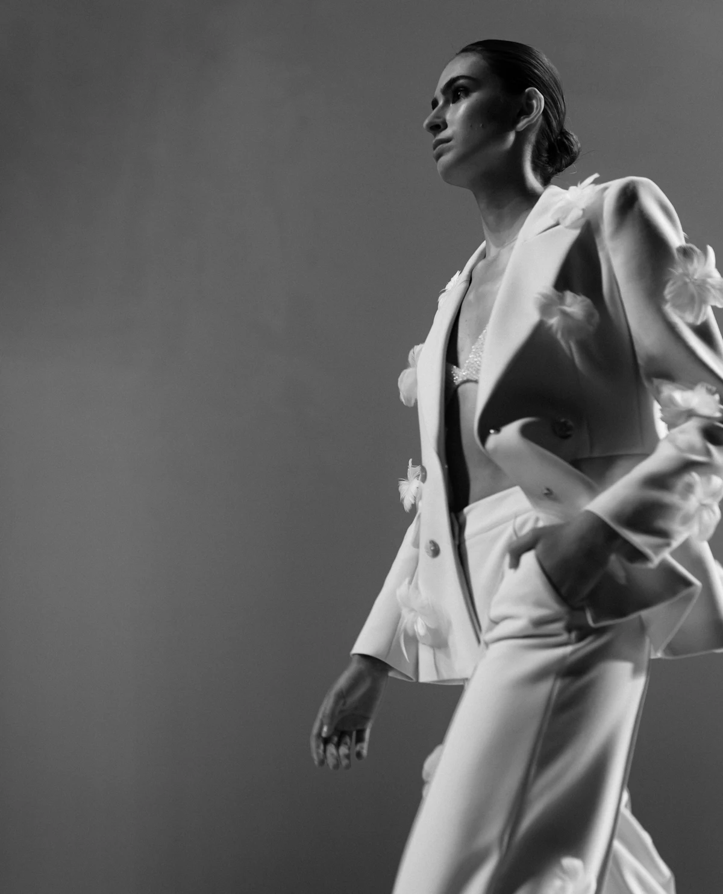
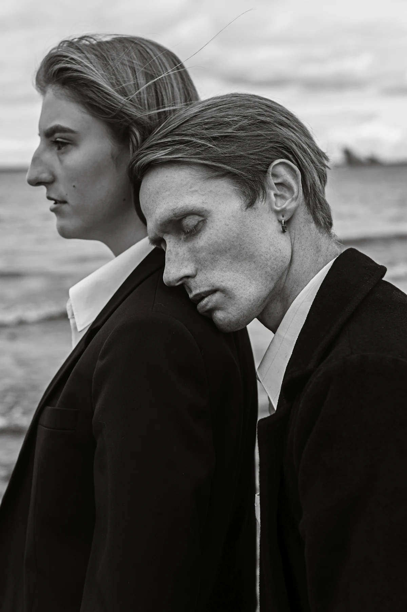
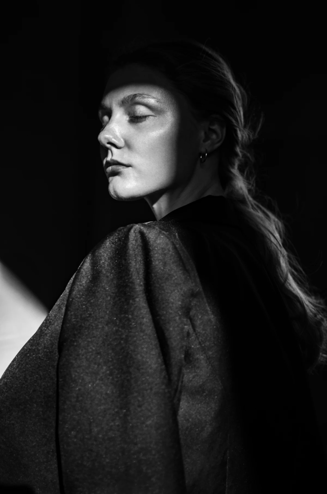
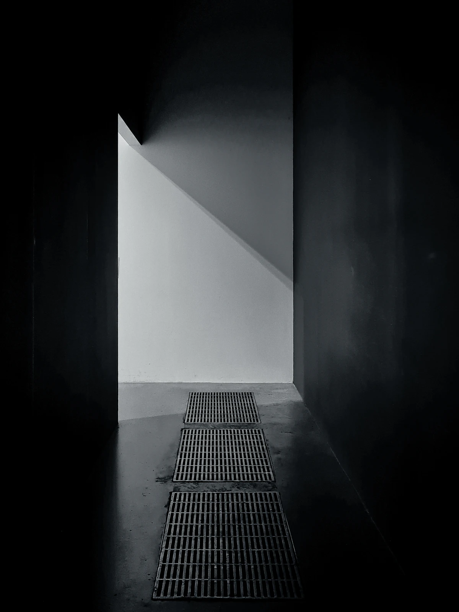
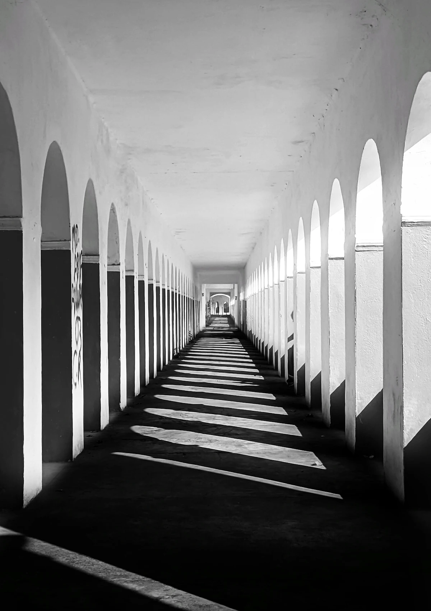
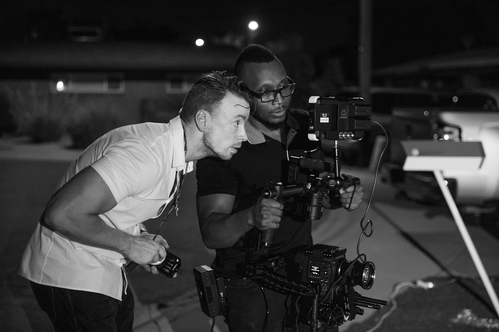

01 White Hours Atelier VossFashion film · Direction 2026 16 mm DirectorMira LenzDPJonas EkdahlRuntime02:48(Index) Films 2016 — 202606 selected · 16 in the archive · 196 delivered
Films

02 Low Tide Ferro Vahl — Nord RecordsMusic video · Production 2025 Super 16 DirectorNoor SalehDPJonas EkdahlRuntime04:12
03 Cold Light HaldenCommercial · Production, post 2025 Digital LF DirectorTobias AchterbergDPIlka BrandtRuntime00:45
04 Block 9 Self-producedDocumentary · 61 min 2024 16 mm + DIG DirectorTobias AchterbergDPIlka BrandtRuntime61:00
05 Arcade VerreCommercial · Direction 2024 Anamorphic DirectorMira LenzDPIlka BrandtRuntime01:30
06 Nachtschicht Lune Halvorsen — Nord RecordsMusic video · Production 2023 Digital DirectorNoor SalehDPJonas EkdahlRuntime03:56(02) ArchiveA selection — the rest lives on LTO in the basement2016 — 2025
Ten years,
one roll at a time
One documentary every year since the first, paid for by the commercials. The early ones were shot on short ends left over from other people’s jobs.
- 2025HalbzeitKAIRODocumentary16 mm52:00
- Paper WeatherAtelier VossFashion film16 mm01:58
- 2024UndertowAda Kreis — Nord RecordsMusic videoSuper 1603:41
- 2023GrauzoneHaldenCommercialDigital00:30
- Salt RoadKAIRODocumentary16 mm47:00
- 2022OstwindKAIRODocumentary16 mm54:00
- Clear HoursVerreCommercialDigital01:00
- 2021Spree, 5 a.m.KAIRODocumentaryDigital38:00
- HollowThe Fenns — Nord RecordsMusic videoDigital04:05
- 2020Night FerryKAIRODocumentary16 mm44:00
- DistanceHaldenCommercialDigital00:45
- 2019The Last ProjectionistKAIRODocumentary16 mm31:00
- SeamlineAtelier VossFashion film16 mm02:10
- 2018TempelfeldKAIRODocumentaryDigital26:00
- 2017KanalKAIRODocumentary16 mm22:00
- 2016KairosKAIROShort documentary16 mm11:00